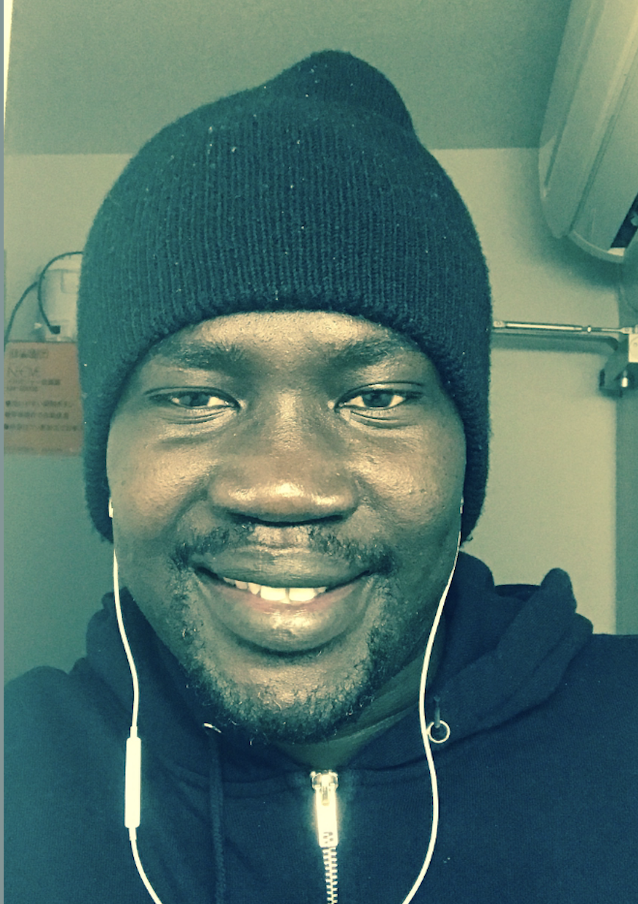
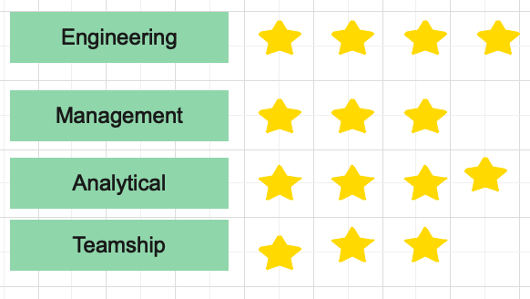

Lino ATEM

SUMMARY
As an engineer and project management specialist, my name is Lino Atem. I am deeply passionate about various
aspects of engineering, and my expertise lies in tackling complex challenges and devising innovative solutions.
With a commitment to hard work and dedication, I take pride in consistently exceeding expectations and meeting the
tight deadlines in my professional endeavors.
Being a team player is integral to my approach. I recognize the value of collaboration and diverse perspectives,
actively contributing to a positive and cooperative work culture. I understand that effective teamwork is essential
for achieving optimal results in both engineering and project management.
In summary, I am Lino Atem, a professional who brings a blend of technical expertise, project
management skills, dedication, and collaborative spirit to ensure successful outcomes in every endeavor.
EDUCATION
- MBA | APU Graduate School of Management | 2018
- Bsc in Engineering | Sudan University Of Science & Technology | 2004
Work Experience
- CEO | ABN Engineering | 2023-Present
- Setting and executing company strategy
- Allocating and Management of capitals
- Building and overseeing company various teams
- overseeing overall company operations
- Project Director | SIPET | 2019-2023
- Provide leadership and technical guidance to all functional groups in the Engineering Project Teams in Engineering, Procurement, Construction and Commissioning.
- Foster engineering practice to reach an optimized solution.
- Participate in the Management and Project Monthly, weekly, and ad hoc Meetings.
- Set policies and guidelines for the Overall Project Teams
- Foster a cohesive and smoothly functioning multi-company, multi-cultural project team.
- Assist clients to make an informed decision based on well-engineered options.
- Build risk analysis framework and risk mitigation plan for facilities engineering projects.
SKILLSSET

Awards & Certification
- Africa Business Education Award | Japanese Government | 2018